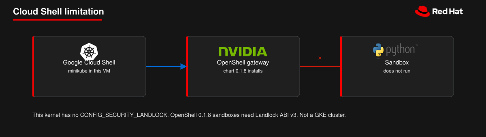

Cloud Shell already includes minikube. The cluster runs in that VM and does not create a GKE cluster. The gateway comes up on containerd 2. The sandbox does not: this kernel has no CONFIG_SECURITY_LANDLOCK.

Not a GKE cluster. The sandbox needs Landlock ABI v3. This kernel does not have CONFIG_SECURITY_LANDLOCK.
You administer this cluster, so you can install the Agent Sandbox CRD. Do not pass deploy/openshift-scc-values.yaml. That file is for OpenShift restricted-v2.
The Docker runtime on this host was docker://29.2.1. It does not advertise supplementalGroupsPolicy, and the sandbox pod's Strict value ends in SupplementalGroupsPolicyNotSupported. Cloud Shell sets MINIKUBE_FORCE_SYSTEMD=true. With containerd 2.2.1 that makes runc demand slice:prefix:name while the kubelet sends /k8s.io/..., so the control plane never listens. The kubelet still reports NodeHasNoDiskPressure.
If kubeadm is still waiting after four minutes and the kubelet log names slice:prefix:name, switch containerd to cgroupfs. The next init attempt can finish. Continue only when the node prints containerd://2 and strict=true.
Cloud Shell is Debian. Use the musl binary, not the Fedora installer. Leave the port-forward running in another terminal. The directory name must match the gateway name.
The first gateway remove prints No gateway metadata found for 'minikube'. The add on the next line still registers this cluster's certificates. openshell status then shows Connected for 0.1.8.
4Smoke test
The image pull succeeds. The agent container then exits 1 in the same second. The supervisor process starts, and its readiness probe to port 5501 stays refused. openshell-0 stays Running.
That log is Landlock ABI v3 or newer (Linux 6.2+) is required, but Landlock is not implemented (kernel lacks CONFIG_SECURITY_LANDLOCK). Minikube's docker driver uses the Cloud Shell kernel. A sandbox needs a kernel with Landlock ABI v3.